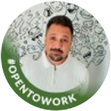

Teamwork Makes The Dream Work
I had the privilege of working closely with Chanel in the Work Product Management (WPM) value stream at Co-Flo, where she was our sole Senior Product Designer & genuinely one of the strongest designers I’ve worked with.
Chanel brings a rare combination of deep user empathy, sharp business understanding & true systems thinking. She doesn’t just design interfaces, she designs solutions. Every output reflects a clear grasp of the user problem, the business goal or bet behind it & how to balance those into something intuitive, scalable & commercially meaningful.
During her time with us, Chanel led design across critical initiatives, including full task management & work orchestration features, & played a key role in shaping the Key & Critical Dates framework for a legal WPM product. She didn’t just deliver, she elevated how we worked, defining design standards & processes, strengthening discovery & ideation & actively partnering with Product to improve the product itself & unlock new opportunities.
She’s also incredibly fluent in applying AI within design workflows, not as a crutch, but as an accelerator, while maintaining a level of craft, judgment & originality that goes far beyond what AI alone can produce.
From a working style perspective, Chanel is everything you want in a senior partner, reliable, self-managing, proactive, ambitious & just an all-round pleasure to work with. She brings great energy into a team, contributes to culture naturally & can be trusted to own her space end-to-end without oversight.
Her departure from Co-Flo was purely due to company funding constraints, not performance & losing her was a genuine loss.
I’d hire Chanel again in a heartbeat. Any team looking for a high-impact, forward-thinking designer who truly understands the intersection of user, business & modern AI capability will be very lucky to have her.
Chanél has been a standout member of our UX team at Lula. She consistently brings creativity, attention to detail, and a strong sense of ownership to her work. She’s collaborative, thoughtful in her approach, and has a natural ability to balance user needs with business goals.
What stands out most is her willingness to support the team when needed and the calm, professional way she handles challenges. As her manager, I could always trust that Chanel would fully own her projects and see them through with quality and commitment — a quality that makes her an invaluable member of the team.
For anyone lucky enough to work with her in the future, two pro tips: put Chanél in charge of design presentations — and make sure there’s good coffee around!
Keep being endlessly curious, Chanél.
I had the pleasure of working with Chanél at Lula, where she consistently impressed me with her design expertise, attention to detail, and user-first mindset.
Chanél is incredibly hardworking, collaborative, and always brought thoughtful solutions to complex problems. She is a true asset to any team - her sense of humour and dedication to everything she does will be truly missed!
It was a pleasure working alongside Chanél during her time as a Product Designer at Gumtree. Chanél brought an exceptional ability to simplify complex flows and craft intuitive, user-centric experiences that made a significant impact on our product offerings.
Her proactive nature and collaborative spirit made her an invaluable team player. Chanél consistently went above and beyond, contributing creative ideas and ensuring the best outcomes for both the business and our users.
Beyond her professional skills, Chanél’s sense of humor and light-heartedness brought a unique energy to the team, fostering a positive and engaging work environment that we all cherished.
I have no doubt Chanél will continue to excel and bring immense value wherever her journey takes her, and I wholeheartedly recommend her for any future endeavours.
Chanél is a passionate and dedicated designer with so much knowledge about so many different things. She delivers work at a high standard and she's the kind of person who can take on any task, even if it requires figuring things out along the way. She is delightful to work with, always bringing jokes, laughs and fresh perspectives into the room. I loved being on a team with her and cannot stress enough what an asset she is to the design industry.

UX • Product Strategy • Gamification
Chanél is one of those designers that you just imprint on. Not only is she an amazing personality, her work ethic and quality of results makes her a gem in the industry.
I have been in the UX industry for nearly 15 years and Chanél has left an impression on me that will forever be the highlight of my career. I saw magic in her and she delivered.
Her knowledge of user experience and design is amazing! It feels like she has done this for a very long time. She dives deep into the problem and her research skills is top notch. She has a way of building trust with her so you know that any requests or project is in capable hands.
I really loved working with her and really has been a pleasure being her leader at Ozow. She has such a presence and hr work ethic is top notch. Always delivers, on time and with quality. She works so well with a team and makes everyone feel so comfortable. I love the fact that she is always learning and more importantly always eager to learn! I am so proud of the UX & Product Designer she has become!
I wish her the best of her bright future! I can tell she was born for this industry and I think she will continue to shine.
I had the privilege of working with Chanél in her capacity as UX Designer at Ozow and really enjoyed what she has to offer as a multi-talented Designer. She's always curious and asks questions throughout the design process, which helps her to understand the problem space fully. I've seen her research boards, and she leaves no stone unturned!
Once Chanél understands the requirements and user needs, she can create fully functional Figma prototypes. Her level of expertise and passion she shows for this type of work is truly contagious. She's got a real talent for creating Figma components from scratch, and it's amazing to see her in action.
Chanél also taught me how to use Autolayout correctly to save time for consistently spacing our layouts. I truly believe that this skill alone is what separates good designers from great ones, and Chanél is an absolute rockstar in this sense! Her work is nothing short of incredible.
I'm always excited to see what Chanél does next. She's always willing to help, no matter how big or small the task is. She's efficient and effective and always has a joke to crack in between. Certainly, Chanél's exceptional skills and experience in the full design process make her an invaluable asset to any company fortunate enough to have her on their team.